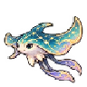
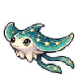

No.014
シオナギ
潮 進化形
潮風に乗り、島々の間を渡る。翼のきらめきは夕凪の海に似ている。
基本データ
| 図鑑番号 | No.014 |
|---|---|
| タイプ | 潮タイプ |
| 進化 | ミナモからLv.8で進化 |
| 入手方法 | 暁帆島（Lv.42〜45）、水鏡の棚田（Lv.56〜59）の草むらに出現。 |
Lv.50の能力値
| 体力 | 289 | |
|---|---|---|
| 物理攻撃 | 173 | |
| 物理防御 | 117 | |
| 特殊攻撃 | 177 | |
| 特殊防御 | 115 | |
| 素早さ | 123 | |
| 命中 | 100 | |
| 回避 | 99 |
冒険中の能力値はレベルに応じて上がります。オンライン対戦の通常レンタルはLv.50で統一されます。
覚える技
| 技 | タイプ | 分類 | 威力 | 命中 | PP | 効果 |
|---|---|---|---|---|---|---|
| 深海の呼び声 | 潮 | 特殊 | 44 | 90 | 10 | 潮の力を解き放つ強力な特殊攻撃。6%で水封にすることがある。 |
| 雨糸の縫針 | 潮 | 特殊 | 40 | 90 | 15 | 潮の力で守りを貫く特殊攻撃。防御の技による軽減を受けない。6%で水封にすることがある。 |
| 朱灯の行進 | 灯 | 特殊 | 34 | 96 | 15 | 灯の力を込めた特殊攻撃。威力と命中のバランスがよい。10%で灯焼けにすることがある。 |
| 静寂のまもり | 無 | 防御 | — | — | 15 | 心を静めて構え、次に受ける攻撃のダメージを半分にする。素早さに関係なく先に構える。 |
進化の系譜

ミナモLv.8 ▶- シオナギ
タイプ相性
潮タイプの技は灯タイプに強く（1.5倍）、芽タイプの技を受けると効果が大きくなります。同じタイプの技を使うと威力が1.15倍になります。